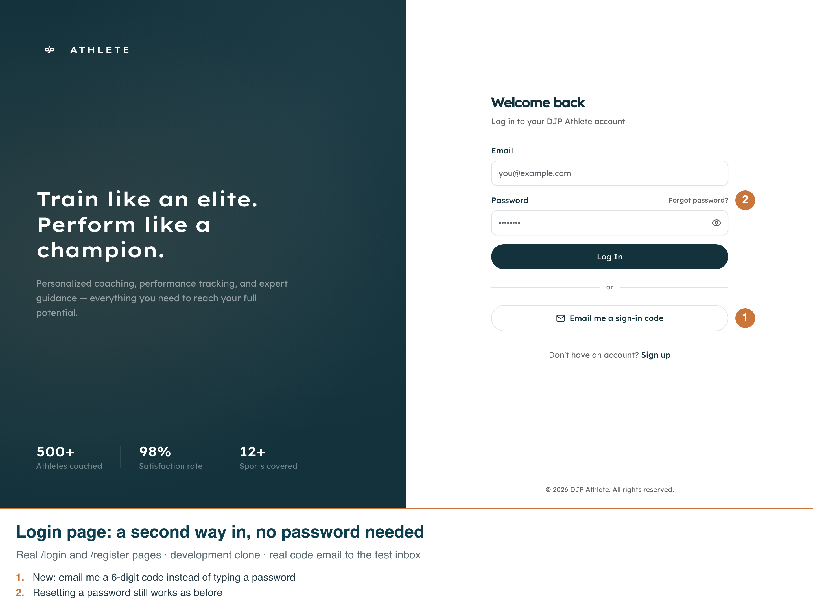
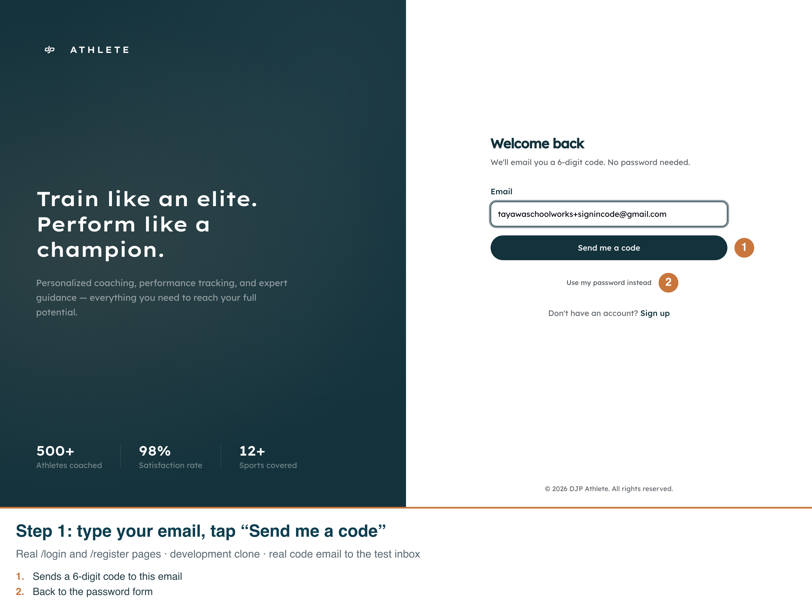
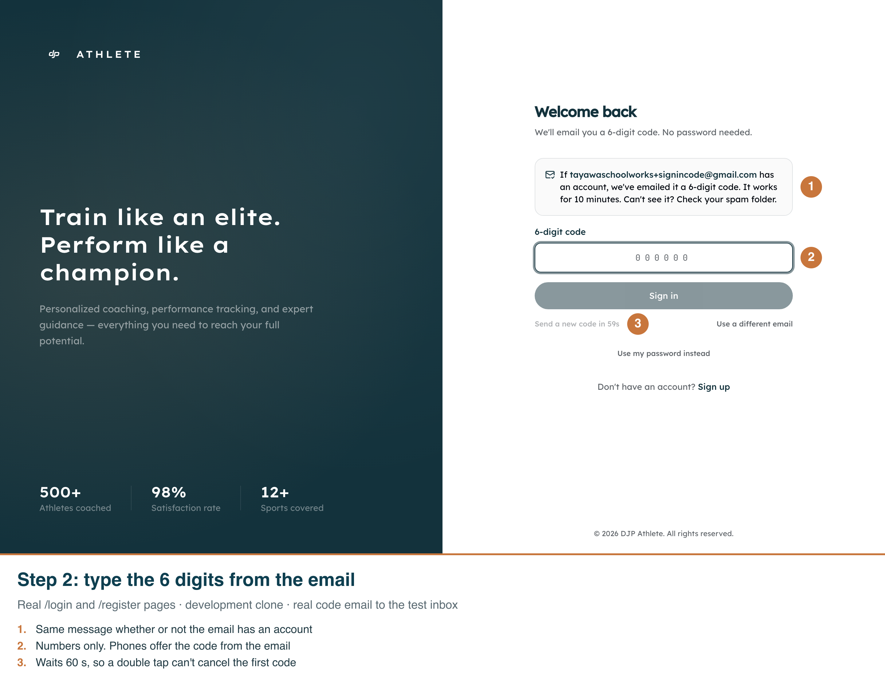
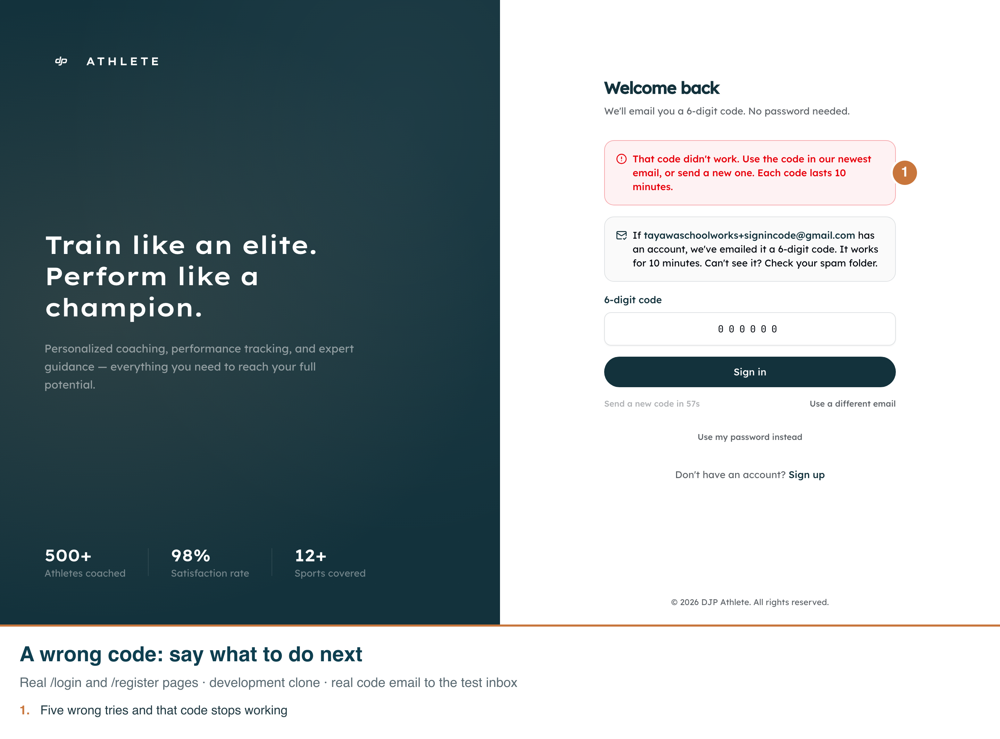
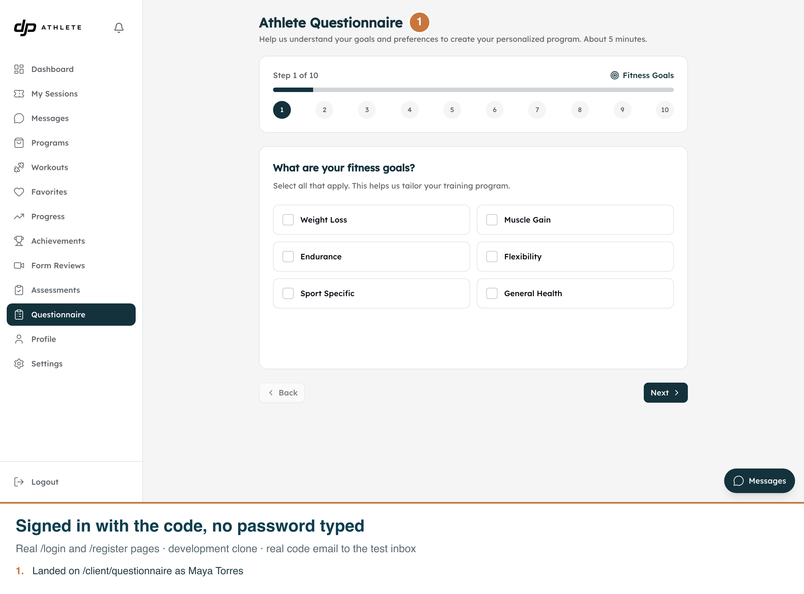
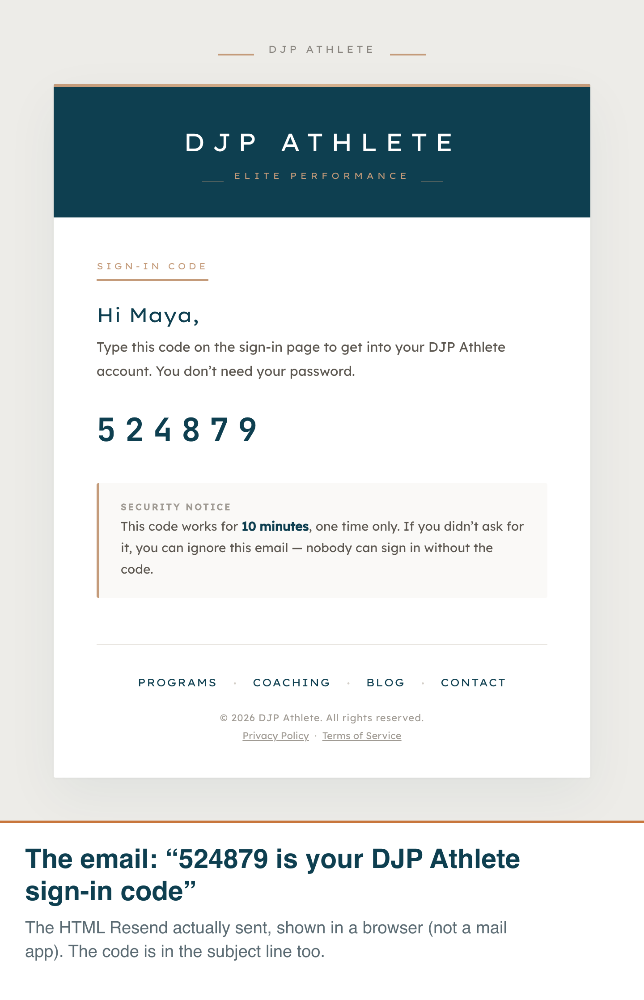
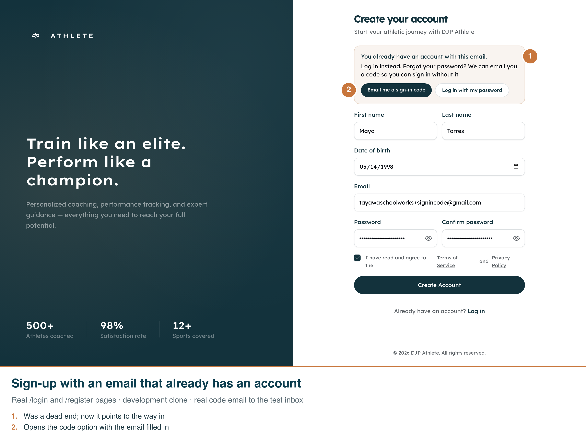
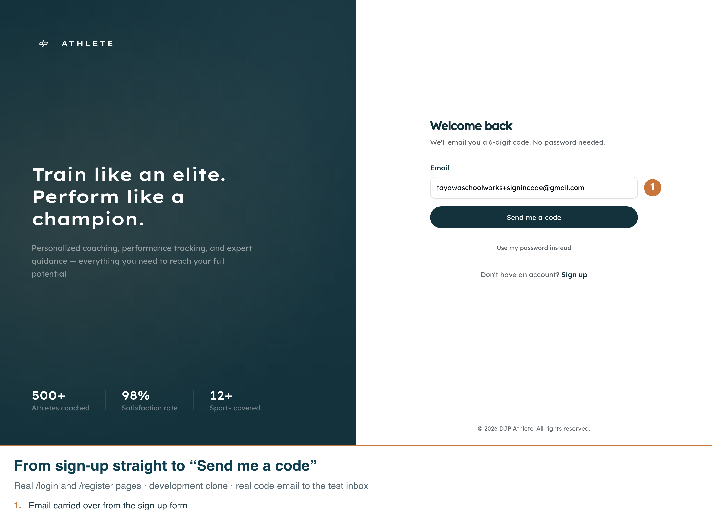

Captured from the real /login and /register pages on the development clone (2026-10-08). The code was real: the script read it from the email Resend delivered to the test inbox, typed a wrong one first, then the right one. Light only — these pages have no dark mode.
1. Login page — the new button under “Log In”

2. Ask for a code — email, then “Send me a code”

3. Enter the code — same message whether or not the account exists; resend waits 60 s

4. Wrong code — says what to do next

5. Signed in — landed in the athlete area with no password typed

6. The email — the HTML Resend sent, shown in a browser

7. Sign-up with an existing email — points to the way in instead of a dead end

8. From sign-up to the code — email carried over

9. On a phone — 390 px wide; long emails wrap inside the box